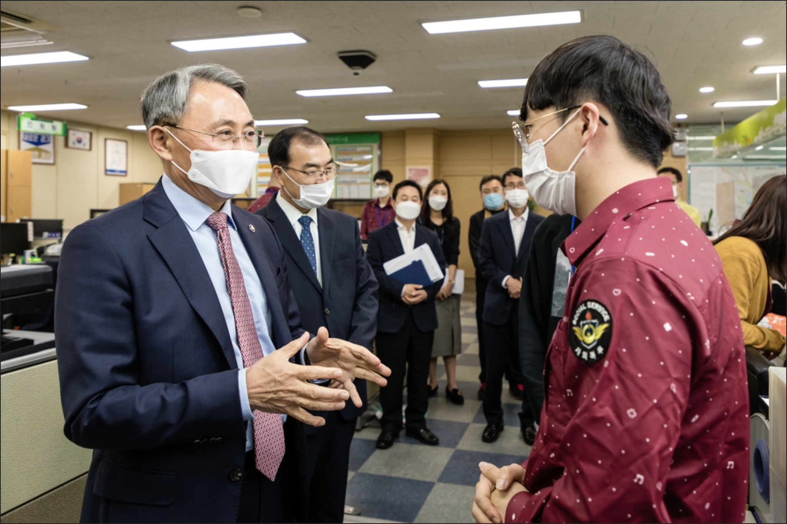

What is Social Service Personnel?
Social service personnel is a system in which people who have been disposed of for supplementary service by the military service examination in Korea, a conscription country, perform alternative service in areas necessary to fulfill public purposes. Yes. I am that social service personnel
How It Works? How Long Does It Take?
Social service personnel work for 21 months in public facilities, mainly in city halls, education offices, courts, prosecutors' offices, police stations, national museums, national hospitals, and schools for the disabled.
What I Have To Do?
The Military Services Administration and the Department of Defense consider social service personnel to be civilians and do not interfere with them after the 9-6 workday.
That means I can do whatever I want.
Technically, it's illegal to have a paying job, but no one cares, nor does it matter. Just don't get caught.
Most of social service personnels teach a tutoring class related to their college major, or take an unpaid internship to gain experience.